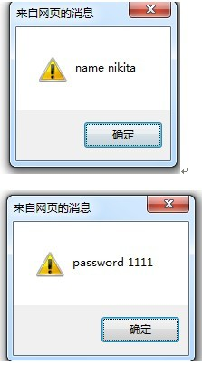
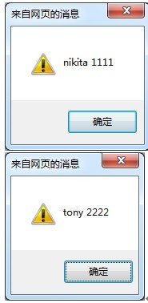

JSON: JavaScript Object Notation(JavaScript 对象表示法)
JSON 是存储和交换文本信息的语法。类似 XML。
JSON 比 XML 更小、更快，更易解析。
一、什么是 JSON ？
- JSON 指的是 JavaScript 对象表示法（JavaScript Object Notation）
- JSON 是轻量级的文本数据交换格式
- JSON 独立于语言 *
- JSON 具有自我描述性，更易理解
*JSON 使用 Javascript语法来描述数据对象，但是 JSON 仍然独立于语言和平台。JSON 解析器和 JSON 库支持许多不同的编程语言。 目前非常多的动态（PHP，JSP，.NET）编程语言都支持JSON。
1.1综合概述：
JSON是一种轻量级的数据交换格式，采用完全独立于语言的文本格式，是理想的数据交换格式。同时，JSON是 JavaScript 原生格式，这意味着在 JavaScript 中处理 JSON数据不须要任何特殊的 API 或工具包。
二、在JSON中，有两种结构：对象和数组。
- 1.对象
一个对象以“{”开始，“}”结束。每个“key”后跟一“:”，“‘key/value’ 对”之间运用 “,”分隔。
packJson = {"name":"nikita", "password":"1111"}
2.数组
packJson = [
{"name":"nikita", "password":"1111"},
{"name":"tony", "password":"2222"}
];
数组是值的有序集合。一个数组以“[”开始，“]”结束。值之间运用 “,”分隔。
三、JSON对象和JSON字符串的转换
在数据传输流程中，json是以文本，即字符串的形式传递的，而JS操作的是JSON对象，所以，JSON对象和JSON字符串之间的相互转换是关键。例如：
JSON字符串：
var jsonStr = '{"name":"nikita", "password":"1111"}';
JSON对象：
var jsonObj = {"name":"nikita", "password":"1111"};
3.1 jQuery插件支持的转换方式：
$.parseJSON( jsonstr ); //jQuery.parseJSON(jsonstr),可以将json字符串转换成json对象
3.2 浏览器支持的转换方式:
JSON.parse(jsonstr); //可以将json字符串转换成json对象
JSON.stringify(jsonobj); //可以将json对象转换成json对符串
3.3 Javascript支持的转换方式：
eval('(' + jsonstr + ')'); //可以将json字符串转换成json对象,注意需要在json字符外包裹一对小括号
注：ie8(兼容模式),ie7和ie6也可以使用eval()将字符串转为JSON对象，但不推荐这些方式，这种方式不安全eval会执行json串中的表达式。
注意：
上面的几个方法中，除了eval()函数是js自带的之外，其他的几个方法都来自json.js包。新版本的 JSON 修改了 API，将 JSON.stringify() 和 JSON.parse() 两个方法都注入到了 Javascript 的内建对象里面，前者变成了 Object.toJSONString()，而后者变成了 String.parseJSON()。如果提示找不到toJSONString()和parseJSON()方法，则说明您的json包版本太低。
四、遍历JSON对象
myJson = {"name":"nikita", "password":"1111"};
for(var p in myJson){//遍历json对象的每个key/value对,p为key
alert(p + " " + myJson[p]);
}
运行结果：

五、遍历JSON数组
packJson = [
{"name":"nikita", "password":"1111"},
{"name":"tony", "password":"2222"}
];
for(var p in packJson){//遍历json数组时，这么写p为索引，0,1
alert(packJson[p].name + " " + packJson[p].password);
}
也可以这么遍历：
for(var i = 0; i < packJson.length; i++){
alert(packJson[i].name + " " + packJson[i].password);
}
运行结果：

六、将两个JSON对象组装到一个里面
- 方法：
var mergeJsonObject = function (jsonbject1, jsonbject2) {
var resultJsonObject={};
for(var attr in jsonbject1){
resultJsonObject[attr]=jsonbject1[attr];
}
for(var attr in jsonbject2){
resultJsonObject[attr]=jsonbject2[attr];
}
return resultJsonObject;
};
举个栗子：
var json1 = {"name":"nikita"};
var json2 = {"password":"1111"};
mergeJsonObject(json1, json2);
本文引用文章地址：
1.http://www.cnblogs.com/csj222/archive/2013/04/11/3013667.html
2.http://www.jb51.net/article/35090.htm
3.http://blog.csdn.net/wangshu696/article/details/50969281